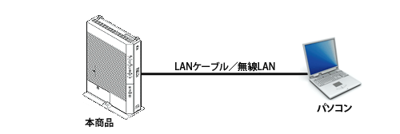
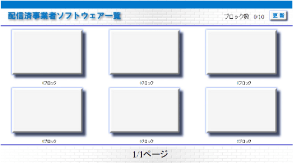

| 1. |
本商品のLAN側にパソコンが接続されていることを確認する。 |
|  |
| 2. |
パソコンを起動する。 |
| 3. |
Webブラウザを起動する。 |
| 4. |
Webブラウザのアドレスに｢http://ntt.setup:8888/t/｣もしくは本商品のIP アドレス（「http://192.168.1.1:8888/t/」 ※工場出荷時の場合）と入力後、パソコンのEnterキーを押します。 |
＜ご注意＞
- 本画面は、本商品を起動後１０分程度お待ちいただいた上でご利用ください。
|
| |
| 5. |
初期設定や設定変更等を行いたいサービスをクリック。 |
|  |
＜お知らせ＞
- ポータル画面右上のブロック数には、“利用中のブロック数合計“／“利用可能なブロック数合計“を表示しております。
- 現在、“利用可能なブロック数の合計”は10です。
|
| |
＜ご注意＞
- 本画面よりリンクするサービス提供事業者が提供している設定画面等のご利用・設定方法につ
いては、各サービス提供事業者から送付されている説明書などを参考にしてください。
|
| |